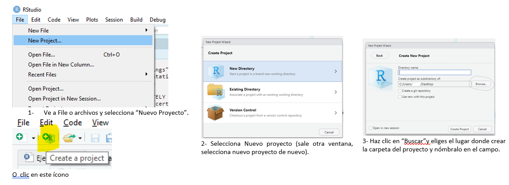
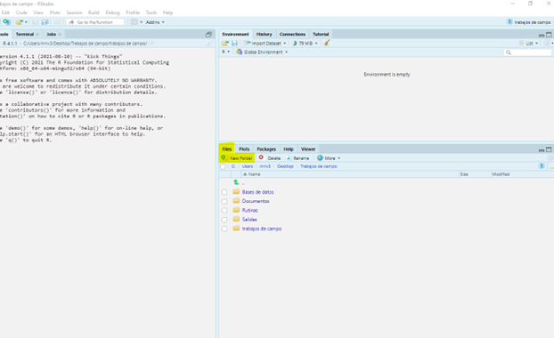
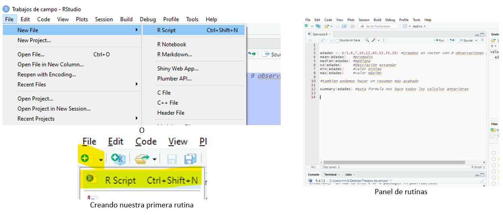
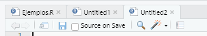

edades <- c(5,6,7,10,12,40,53,35,29) #creamos un vector con 9 observaciones numericas
mean(edades) #promedio
median(edades) #mediana
sd(edades) #desviación estandar
min(edades) #valor minimo
max(edades) #valor máximo
#tambien podemos hacer un resumen más acabado, con menos comandos
summary(edades) #esta función nos hace todos los calculos anteriores}3 Comenzar a trabajar con R y la interfaz de Rstudio
Ya luego de tener todo lo necesario instalado, ahora vamos a realizar los siguientes pasos con la finalidad de ir aprendiendo a organizar los trabajos que estaremos haciendo, como son los productos o asignaciones que se deben hacer durante la capacitación, como son los análisis de vigilancia, análisis de brotes, evaluación de sistema de vigilancia entre otros.
Una gran recomendación es tener lo más organizado posible cada elemento hecho en R o cualquier documento asociado a los análisis o trabajos que vas a realizar; esto porque en nuestro caso, cuando comenzamos a trabajar con RStudio guardábamos las rutinas y las salidas en diferentes lugares, como principiantes al fin, no teníamos una estructura, y luego cuando necesitábamos re-usar una rutina, buscar un documento de salida era muy difícil de encontrar y perdíamos tiempo en esa búsqueda, a veces nos tomaba más que lo que se toma ejecutar una rutina. Luego aprendimos sobre lo que vamos a ver a continuación en cuanto a trabajar bajo proyectos en RStudio.
3.1 Creación de un proyecto
El primer paso para comenzar es decidir dónde estarán los archivos relacionados al o a los trabajos que se van a hacer, es decir, debes definir si almacenarás tu trabajo en un disco dentro de la PC o en la “Nube” (ejemplo, OneDrive, Google drive) para que así siempre facilites tu trabajo, especialmente cuando necesites hacer cambios o actualizar las bases de datos.
Esto es sumamente importante dado que nos ayudará a mantenernos organizados. Todos los archivos como las bases de datos, las referencias, las rutinas, deben estar almacenados en un lugar donde te sea fácil encontrarlos y también para la ejecución o desarrollo del proyecto o proyectos en que estés trabajando.
Para el segundo paso vamos a entrar en RStudio y vamos a crear un archivo de proyecto de la siguiente forma:

Crea el proyecto llamándolo “mi_primer_proyecto” siguiendo los pasos de la Figura 10.
Guarda el proyecto nuevo en el “escritorio” o en “Documentos” si usas Windows.
Para crear las carpetas, en la ventana inferior derecha o panel para archivos, ve a “Archivos” o “File”, luego haz clic en “new folder” para crear las siguientes carpetas:
“Base de datos” para almacenar tus datos en cualquier formato, como datos en Excel, por ejemplo.
“Rutinas” para salvar las rutinas que irás creando.
“Referencias” vas a poner aquí los documentos de soporte como referencias, artículos, etc.
“Salidas”, donde vamos a salvar los documentos generados a partir de las rutinas, en esta última podemos tener una subcarpeta que se llame “imágenes” para las salidas que son imágenes, como gráficos o tablas salvadas en formato de imagen.

Si has hecho todos estos pasos y tu pantalla se parece a la imagen anterior es porque has creado un proyecto. Puede verificar el nombre del proyecto en la esquina superior derecha de la interfaz de RStudio.
Aparte de mantener una organización para mantener todo en orden, la mayor ventaja de usar proyectos es que a RStudio se le facilita encontrar dónde están los archivos que serán usados, por ejemplo, si ubicas las bases de datos correctamente, será más fácil para ti importar los datos a R y también exportar archivos a otras herramientas de análisis.
¿Por qué en la imagen anterior falta un panel
En la imagen anterior solo vemos 3 ventanas porque no hemos abierto o creado una rutina, solo tenemos la consola, el panel del ambiente de trabajo y el panel de archivos.
3.2 Archivos de rutina (script) en R
Siguiendo la secuencia de pasos para comenzar a trabajar con R en Rstudio, vamos a ver uno de los elementos más importantes que son las rutinas y que la usaremos constantemente.
Hasta este punto, hemos mencionado varias veces la palabra “rutina”. Una rutina no es más que un “documento” donde escribimos comandos (funciones, cálculos, etc.), que puede ser ejecutado las veces que sea necesario (como por ejemplo procesar y generar un reporte semanal). Realmente crear una rutina es un procedimiento muy sencillo porque se trata simplemente de escribir en un editor de texto las funciones que generan los resultados que esperamos.
Dado que podemos salvar las rutinas como archivos, podemos compartirlas y guardarlas para luego usarlas como referencia.
Para crear una nueva rutina en RStudio vamos a “file” -> “new file” -> “R Script” (en inglés rutina es igual a Script por lo que estaremos utilizando ambos conceptos de manera indistinta a lo largo del curso).
Después de aceptar ahora tenemos el panel de rutinas habilitado (igual que un editor de texto) tal como se ilustra en la Figura 12.
Cuando salves la rutina nueva por primera vez, te pedirá dónde guardar el archivo, entonces procede a guardarlo en la carpeta de “Rutinas” que previamente creaste en el Panel de archivos y ya podrás comenzar a trabajar. Es importante anotar que RStudio no salva el avance de tu rutina automáticamente, sino que siempre debes guardar cada cierto tiempo, ya sea a través del menú o utilizando el atajo Ctrl+S.

Si has llegado hasta aquí, entonces ya tienes una gran parte del camino recorrido, es decir, ya tienes el programa instalado y disponible, un proyecto creado y tu primera rutina guardada. Si desde ya comenzáramos a trabajar, podemos escribir comandos directamente en la consola o en el documento de la rutina para hacer operaciones como aplicar a nuestros datos los estadísticos de tendencia central, para que vayas viendo y familiarizándote con R. Vamos a hacer la siguiente prueba paso a paso:
- Escribe el texto debajo en el documento de la rutina, o si estas desde tu PC, copia y pega todo este texto, selecciónalo (como en cualquier editor de texto o Ctrl+A) y presiona Ctrl+Enter o haz clic en “Run”.
- Luego de ejecutar los comandos, podemos ver el resultado en la consola. Como puedes observar, está escrito lo mismo que la rutina pero debajo de cada comando hay un resultado, es decir, vas a ver el resultado de calcular el promedio a través de la función mean() cuyo resultado es 21.8, y así sucesivamente. La consoloa debería verse algo similar a esto:
edades <- c(5,6,7,10,12,40,53,35,29) #creamos un vector con 9 observaciones numericas
mean(edades) #promedio [1] 21.88889median(edades) #mediana [1] 12sd(edades) #desviación estandar [1] 17.73728min(edades) #valor minimo [1] 5max(edades) #valor máximo [1] 53#tambien podemos hacer un resumen más acabado, con menos comandos
summary(edades) #esta función nos hace todos los calculos anteriores Min. 1st Qu. Median Mean 3rd Qu. Max.
5.00 7.00 12.00 21.89 35.00 53.00 Una de las ventajas que tiene RStudio de trabajar con los documentos de rutina es que puedes tener varias rutinas abiertas a la misma vez y navegar entre ellas. Esto te puede resultar útil para utilizar una rutina dentro de otra, es decir, como las rutinas se pueden guardar en la PC, vas a darte cuenta de que hay muchos procedimientos que se repiten y que solo necesitas modificarlos levemente, en estos casos, mientras estás haciendo una rutina puedes usar otra como referencia para tomar códigos que ya has usado antes o que te han compartido. ¿Cuál es la ventaja de esto? ¡que no es obligatorio aprenderse todas las funciones o comandos de R!
Una muy buena práctica es comentar todo lo que haces para luego saber qué hiciste en una secuencia de códigos. Para esto, solo tienes que comenzar una línea con el carácter “#” o signo de número, y todo el texto después de este carácter cambia de color y se pone en formato itálico, tornando el texto de color verde de forma predeterminada, aunque el color verde pudiera variar dependiendo de la configuración de colores que hayas elegido, tal como te explicamos en la sección 2.2. Cuando estemos en los pasos de hacer tablas y gráficos, vamos a usar mucho los comentarios.
El editor de texto de rutina en RStudio también nos permite ver si hay errores en el código, otra de las tantas funcionalidades que nos ofrece el programa para hacer más fácil la escritura de códigos.
